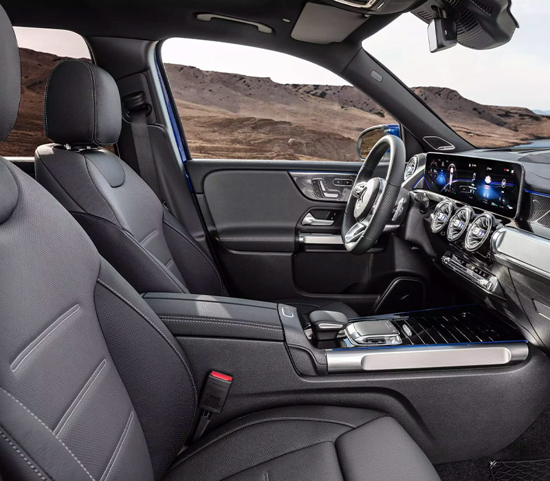

Success definition
What outcome matters, how it will be measured and what information is needed to judge quality.
Commercially grounded work for organisations where every enquiry and workflow matters.
Discuss your sector From healthcare to heavy industry, see how the work adapts.
From healthcare to heavy industry, see how the work adapts.Faridabad · India
Digital marketing · Technology · Automation



One team connecting demand, experience and the systems behind them.
Tell us what needs to moveAbacus Desk brings customer insight, technology and execution into one connected growth system—so campaigns create demand, digital experiences earn attention and teams can act on every opportunity.
Digital marketing. Performance media, SEO, social, content and creative shaped around measurable business goals.
Customer experience. Websites, ecommerce, apps and brand systems that make each interaction easier and more valuable.
Business software. Practical automation for sales, service, logistics, loyalty and field operations.
Enterprise IT. Cloud, workspaces, infrastructure and support that keep modern businesses moving.
Original project imagery from the Abacus Desk portfolio.
“Their response time is excellent and that helps us keep our down time to bare minimum, a critical need of our business.”
“They always take time and have the patience to understand your problems correctly.”
“Abacus Desk is on call 24X7. They are easily one of the best in business today.”
Choose what matters. We’ll carry your brief into the conversation, so the first call starts with substance.
Good work starts with shared expectations. These are the conversations we make explicit before an engagement begins.
What outcome matters, how it will be measured and what information is needed to judge quality.
Who approves, who supplies inputs and how work moves between the Abacus Desk team and yours.
What is included, what is not and the milestones that keep delivery visible.
How performance, customer response and operational feedback shape the next decision.
Tell us the commercial problem, not the channel. We’ll help frame the right starting point.